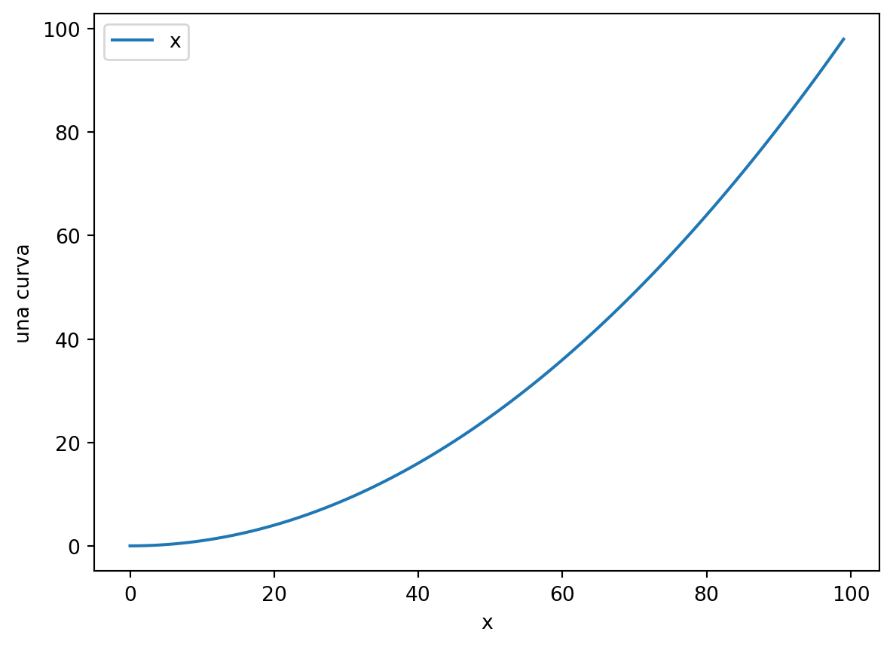
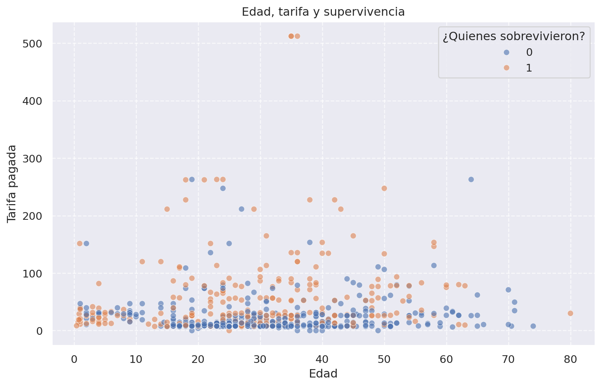
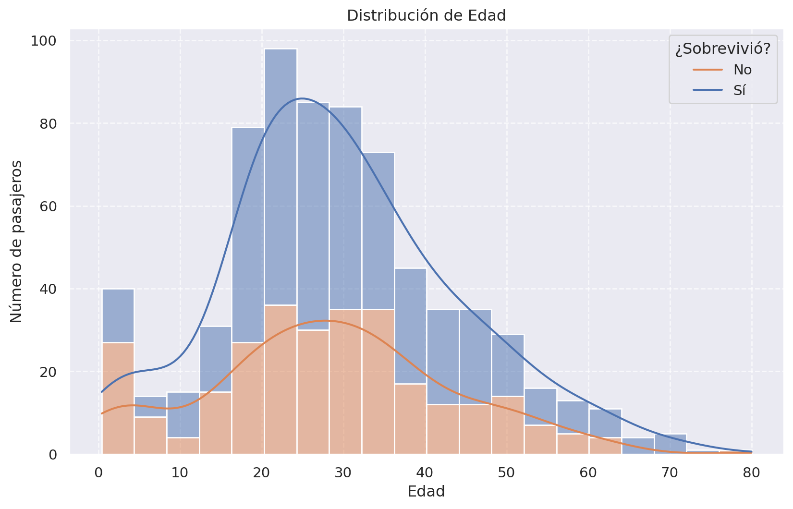
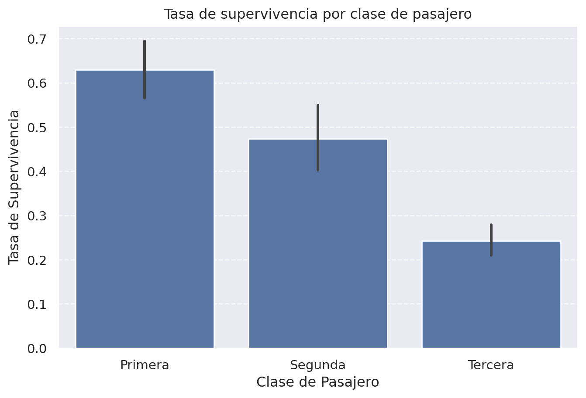

import numpy as np
import matplotlib.pyplot as plt
plt.plot(np.arange(0, 10, 0.1)**2)
plt.ylabel('una curva')
plt.xlabel('x')
plt.legend('x**2')
plt.show()

Una parte importante del análisis es la gráficación de resultados, nos permite obtener información visual sobre relaciones que nos permitirán comprender información de un problema.
En python podemos encontrar una múltitud de paquetes nos ayudan a graficar resultados, con diversas recetas diseñadas para mejorar la apreciación de los mismos en diferentes dominios de aplicación.
En este curso revisaremos dos paquetes:
pyplot: basado en matplotlib pero diseñado para tener un look & feel de MATLAB.seaborn: de nueva cuenta se basa en matplotlib pero esta diseñado para trabajar con estructuras de datos de Pandas, y permite crear gráficos estadísticos.Sitios recomendatos para aprender sobre matplotlib y seaborn:
La figura Figura 1 muestra una gráfica de una curva. Observese el código, en particular como se indican los argumentos
import numpy as np
import matplotlib.pyplot as plt
plt.plot(np.arange(0, 10, 0.1)**2)
plt.ylabel('una curva')
plt.xlabel('x')
plt.legend('x**2')
plt.show()Es posible notar que se le dieron los valores en el eje \(y\), y que infirió los valores en \(x\); esto es cómodo, aunque muchas veces deberíamos escoger lo forma más prolija pero precisa de Figura 2:
import numpy as np
import matplotlib.pyplot as plt
x = np.arange(0, 10, 0.1)
plt.plot(x, x**2)
plt.ylabel('una curva')
plt.xlabel('x')
plt.legend('x**2')
plt.show()Note como el rango de la función ahora coincide con los datos que la originaron.
Muchas veces es buena idea tener un buen balance entre expresividad y cantidad de código, como en Figura 3
import numpy as np
import matplotlib.pyplot as plt
x = np.arange(0, 10, 0.1)
plt.plot(x, x, 'g-', x, x**2, 'r--', x, x**3, 'b^')
plt.ylabel('curvas')
plt.xlabel('x')
plt.title('diferentes ordenes de crecimiento')
plt.show()este es un estilo compacto heredado de MATLAB, pero no hay que preocuparse de lo intrincado de la definición y descripción de lo que se le solicta a pyplot, ya que cuenta con una extensa documentación que puede ser consultada para ver muchos más detalles.
Hasta ahora, hemos visto los métodos plot y scatter; pero también otras funciones muy útiles como es el caso de los histogramas, ver Figura 4.
import numpy as np
import matplotlib.pyplot as plt
data = np.random.randn(5000)
# the histogram of the data
plt.hist(data, 20, density=True, alpha=0.5)
plt.xlabel('x')
plt.ylabel('prob')
plt.axis([-4, 4, 0, 0.5])
plt.grid(True)
plt.show()Muchas veces es necesario separar las figuras en dos o más gráficas, esto se logra de manera explícita controlado el layout como se muestra en Figura 5. Este ejemplo fue tomado del tutorial de pyplot.
import numpy as np
import matplotlib.pyplot as plt
def f(t):
return np.cos(2*np.pi*t)
t1 = np.arange(0.0, 5.0, 0.1)
t2 = np.arange(0.0, 5.0, 0.02)
plt.figure()
plt.subplot(211)
plt.plot(t1, f(t1), 'bo', t2, f(t2), 'k')
plt.subplot(212)
plt.plot(t2, np.cos(2*np.pi*t2), 'r--')
plt.show()Notesé como se índican los múltiples subplots, el número codifica un layout de malla, i.e., número de filas, número de columnas, e índice del subplot (contando de izquierda a derecha y de arriba a abajo).
Cuando se tienen datos relacionados a manera de tabla, es posible usar una versión del API que simplifica aún más la creación de figuras:
import numpy as np
import matplotlib.pyplot as plt
x = np.arange(0, 10, 0.2)
data = {
'x': x,
'cuadrada': x**2,
'color': np.random.randint(0, 10, len(x)),
'area': (np.sin(x) + 1.1) * 15,
}
plt.scatter('x', 'cuadrada', c='color', s='area', data=data)
plt.ylabel('$x^2$')
plt.xlabel('$x$')
plt.show()Una manera más integrada de usar usar tablas es seaborn``. @fig-sb-tips muestra un ejemplo del uso deseaborncon la tablatips`, incluida en ese mismo paquete.
import numpy as np
import seaborn as sns
sns.set_theme()
tips = sns.load_dataset("tips")
print(tips)
sns.relplot(
data=tips,
x="total_bill", y="tip", col="time",
hue="smoker", style="smoker", size="size",
) total_bill tip sex smoker day time size
0 16.99 1.01 Female No Sun Dinner 2
1 10.34 1.66 Male No Sun Dinner 3
2 21.01 3.50 Male No Sun Dinner 3
3 23.68 3.31 Male No Sun Dinner 2
4 24.59 3.61 Female No Sun Dinner 4
.. ... ... ... ... ... ... ...
239 29.03 5.92 Male No Sat Dinner 3
240 27.18 2.00 Female Yes Sat Dinner 2
241 22.67 2.00 Male Yes Sat Dinner 2
242 17.82 1.75 Male No Sat Dinner 2
243 18.78 3.00 Female No Thur Dinner 2
[244 rows x 7 columns]relplot permite definir una malla de subfiguras fácilmente usando una columna como indicador de columna y/o filas.
El siguiente ejemplo es un poco más elaborado y usa la base de datos de titanic:
import pandas as pd
import seaborn as sns
import matplotlib.pyplot as plt
df_titanic = sns.load_dataset('titanic')
df_titanic.head()| survived | pclass | sex | age | sibsp | parch | fare | embarked | class | who | adult_male | deck | embark_town | alive | alone | |
|---|---|---|---|---|---|---|---|---|---|---|---|---|---|---|---|
| 0 | 0 | 3 | male | 22.0 | 1 | 0 | 7.2500 | S | Third | man | True | NaN | Southampton | no | False |
| 1 | 1 | 1 | female | 38.0 | 1 | 0 | 71.2833 | C | First | woman | False | C | Cherbourg | yes | False |
| 2 | 1 | 3 | female | 26.0 | 0 | 0 | 7.9250 | S | Third | woman | False | NaN | Southampton | yes | True |
| 3 | 1 | 1 | female | 35.0 | 1 | 0 | 53.1000 | S | First | woman | False | C | Southampton | yes | False |
| 4 | 0 | 3 | male | 35.0 | 0 | 0 | 8.0500 | S | Third | man | True | NaN | Southampton | no | True |
df_titanic.info()<class 'pandas.core.frame.DataFrame'>
RangeIndex: 891 entries, 0 to 890
Data columns (total 15 columns):
# Column Non-Null Count Dtype
--- ------ -------------- -----
0 survived 891 non-null int64
1 pclass 891 non-null int64
2 sex 891 non-null object
3 age 714 non-null float64
4 sibsp 891 non-null int64
5 parch 891 non-null int64
6 fare 891 non-null float64
7 embarked 889 non-null object
8 class 891 non-null category
9 who 891 non-null object
10 adult_male 891 non-null bool
11 deck 203 non-null category
12 embark_town 889 non-null object
13 alive 891 non-null object
14 alone 891 non-null bool
dtypes: bool(2), category(2), float64(2), int64(4), object(5)
memory usage: 80.7+ KBgráfica: relación entre edad, tarifa y supervivencia
plt.figure(figsize=(10, 6))
sns.scatterplot(data=df_titanic, x='age', y='fare', hue='survived', alpha=0.6)
plt.title('Edad, tarifa y supervivencia')
plt.xlabel('Edad')
plt.ylabel('Tarifa pagada')
plt.legend(title='¿Quienes sobrevivieron?')
plt.grid(True, linestyle='--', alpha=0.7)
plt.show()
Ahora, veremos la distribución de edad por tipo de supervivencia
plt.figure(figsize=(10, 6))
sns.histplot(data=df_titanic, x='age', hue='survived', multiple='stack', bins=20, kde=True)
plt.title('Distribución de Edad')
plt.xlabel('Edad')
plt.ylabel('Número de pasajeros')
plt.legend(title='¿Sobrevivió?', labels=['No', 'Sí'])
plt.grid(True, linestyle='--', alpha=0.7)
plt.show()
Otro ejemplo: ¿La clase influyó en la supervivencia? Gráfico de barras de supervivencia por clase de pasajero
# ---
plt.figure(figsize=(8, 5))
sns.barplot(data=df_titanic, x='pclass', y='survived') # ci=None para no mostrar barras de error
plt.title('Tasa de supervivencia por clase de pasajero')
plt.xlabel('Clase de Pasajero')
plt.ylabel('Tasa de Supervivencia')
plt.xticks(ticks=[0, 1, 2], labels=['Primera', 'Segunda', 'Tercera'])
plt.grid(axis='y', linestyle='--', alpha=0.7)
plt.show()